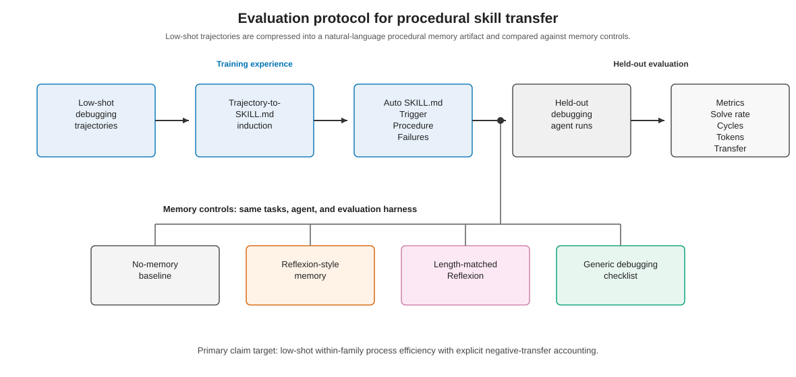
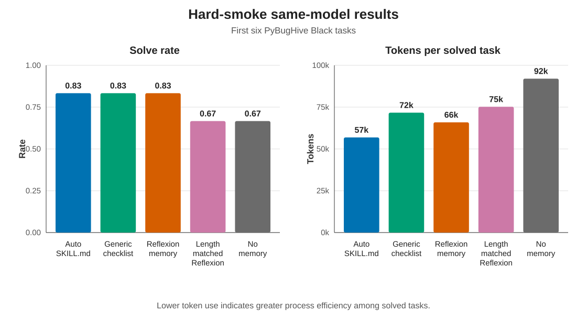
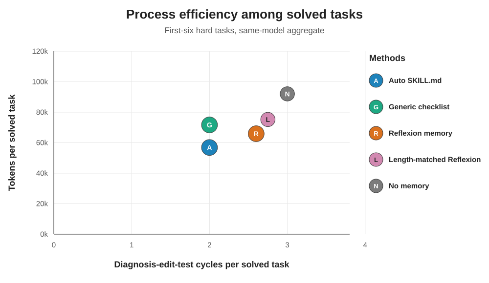

Induce
Compress three redacted debugging trajectories into one natural-language procedural artifact.
Can three prior debugging trajectories become an inspectable procedural memory that transfers to held-out repairs?
The question
Compress three redacted debugging trajectories into one natural-language procedural artifact.
Deploy the same frozen SKILL.md on six related but held-out PyBugHive tasks.
Measure success, diagnosis-edit-test cycles, tokens, failed patches, and negative transfer.
Evaluation protocol
The induction contract prohibits task-specific names and patches. Every primary condition shares the same model, prompts, workspaces, tests, temperature, and budget.

Primary pilot
Auto SKILL.md ties the best solve rate at 5/6. Its clearest signal is process efficiency relative to reflection baselines, not universal solve-rate dominance.

| Method | Solved | Cycles / solved | Tokens / solved | Failed / run | NT |
|---|---|---|---|---|---|
| Auto SKILL.md | 5/6 | 2.00 | 56,867 | 0.83 | 1 |
| Generic checklist | 5/6 | 2.00 | 71,694 | 1.33 | 0 |
| Reflexion memory | 5/6 | 2.60 | 65,915 | 1.33 | 0 |
| Length-matched Reflexion | 4/6 | 2.75 | 75,231 | 1.50 | 0 |
| No memory | 4/6 | 3.00 | 92,031 | 1.17 | 0 |
NT is the number of runs labeled with memory-attributed negative transfer.
Paired task comparison
On four common-solved tasks, Auto-minus-Reflexion mean token use is -22.8k; against length-matched Reflexion it is -27.3k. Both comparisons record one fewer cycle on average.
Human checklist control
Auto and the checklist tie in success and cycles. Their paired token interval crosses zero, so the pilot does not establish a stable advantage over competent human-written procedure.
Failure is part of the measurement
On black_132, the first skill-guided patch increased full-suite failures
from four to six. The trajectory is retained as diagnostic evidence instead of being
hidden inside an aggregate solve rate.
Memory should be evaluated for misapplication, not only retrieval and success.
Robustness and boundaries
Task-level intervals and sensitivity checks expose how much the conclusion depends on a small sample and a few expensive runs.
Wilson 95% intervals are 0.44-0.97 for 5/6 and 0.30-0.90 for 4/6.
Auto's solve-conditional median is 52.6k; its leave-one-task-out mean spans 48.0-62.7k.
Auto and format-shuffled skills both solve 6/6 under the supplementary same-model rerun.

What this paper does not claim
The primary sample is intentionally small.
Intervals describe task variation, not run-to-run stochasticity.
Within-family transfer may not generalize to repository-wide benchmarks.
The negative-transfer label has no independent inter-rater check.
Abstract
We study whether a natural-language SKILL.md induced from three debugging
trajectories transfers to held-out language-agent debugging tasks. Our protocol records
repair success, diagnosis-edit-test cycles, tokens, failed patches, and memory-attributed
negative transfer. In a single-execution pilot on six verified PyBugHive black
tasks, Auto SKILL.md ties a generic checklist and Reflexion at 5/6 solved. Task-level
comparisons show lower process cost than reflection baselines but do not establish a
stable advantage over the checklist. One negative-transfer case and an outlier-sensitive
structural control illustrate why memory evaluation needs uncertainty, process, and
misapplication measures rather than solve rate alone.
Camera-ready paper
Citation
@inproceedings{sun2026trace2skill,
author = {Jiachen Sun},
title = {Evaluating Low-Shot Procedural Skill Transfer in
Language-Agent Debugging},
booktitle = {Proceedings of the 1st International Workshop on Agentic AI
for Next-Generation Software Development},
year = {2026},
publisher = {Association for Computing Machinery},
doi = {10.1145/3843282.3844421},
url = {https://doi.org/10.1145/3843282.3844421}
}